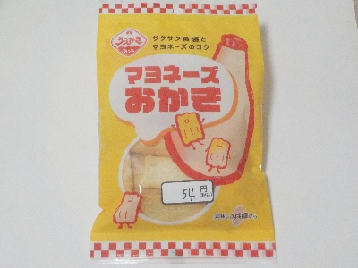
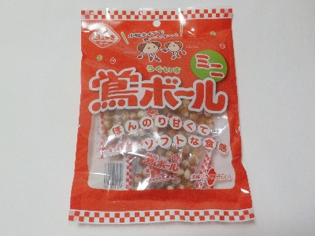
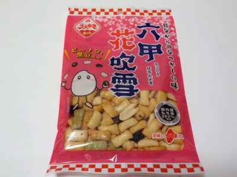
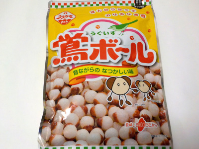
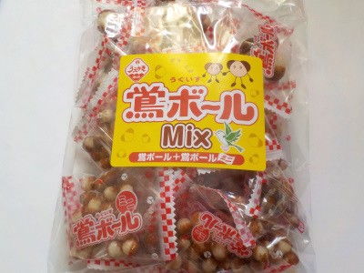

植垣米菓のマヨネーズおかき。
2024/08/11

100円均一で半額で販売されていました。
ちょっと硬めのおかきに、マヨネーズ風味が強めで、甘い味付けになっていました。
濃い味なので、お酒に合うかもと思いました。
兵庫県神戸市長田区西尻池町3-1-3
2024/08/11

100円均一で半額で販売されていました。
ちょっと硬めのおかきに、マヨネーズ風味が強めで、甘い味付けになっていました。
濃い味なので、お酒に合うかもと思いました。
2024/06/29

小袋に小さい鴬ボールが沢山はいってます。小さくて甘いカリカリがいっぱいです。
最初は1粒づつ食べるんですが、もっと食べたいってなってまとめて口の中に流し込んだりします。
美味しいですね。
2024/01/06

おかきは硬いものが多いですが、このおかきは小さいのでサクサクと軽く食べやすいです。
ピーナッツと黒豆が入っていますが、それらは入れなくていいからオカキを増やして欲しいって思いました。
それくらいおかきが美味しかったです。
2023/12/01

税込み124円で買いました。大きいサイズの鶯ボールです。
「ほんのり甘くてカリカリ食感 昔ながらのなつかしい味」って書いてあります。まさにそんな味です。
固いので、一粒づつ噛み締めて味わいながら食べました。
チャックがついているので、のんびり何日かに分けて食べるつもりです。
2022/06/25

懐かしい感じのお菓子を買いました。自分でお金を出して買ったのは初めてです。
食べた感想ですが、思っていたより甘くない。オカキっぽくて香ばしいって思いました。
私の味覚が変わったのか、似た商品の元祖ボールと味を間違えたかな。
鶯ボールmixってことで、大粒のボールと小粒のボールが入っています。私は小粒の方が好きです。